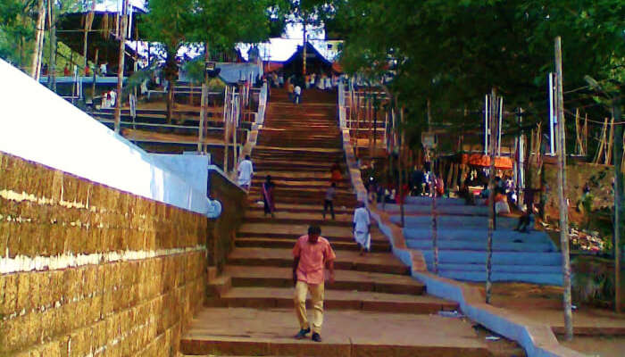
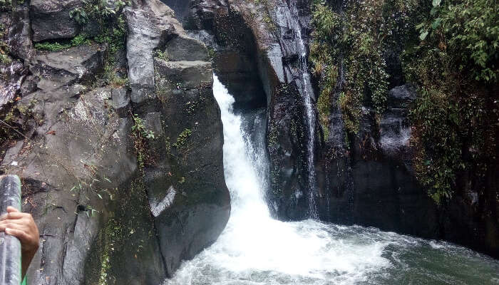

Places to visit in Malappuram

Kerala is known for its pleasant climate, heavy rainfall, pollution free-environment and one of the best tourist attractions across the world. Being the famous hilltop district of Kerala, Malappuram showcases wide options of places to the tourists with its fantabulous buildings, parks, temples, waterfalls and much more. Relish your journey in the district of God’s own country! Check out the top places to visit in Malappuram and take a Malappuram tourist places map and begin your journey. Let’s go!
- Thirumandhamkunnu Temple 
- Kadalundi Bird Sanctuary
- Pazhayangadi Mosque
- Keralmkundu Waterfalls 
- Padinharekera Beach
Stagnant on the hillock of Angadipuram, with a majestic style of appearance, the thirumandhamkunnu temple is one of the famous and ancient Mahakshetras of Kerala. the beauty of the temple itself makes our heart and mind out of solitude and brings inner peace. The temple has a legendary history which is being celebrated as an 11 day-long festival in the month of March and April known as pooram. The principal deity of the temple is lord shiva and the great stories and beliefs of the place. This is surely among the best places to visit in Malappuram.
Location:Bhagavathi Padam, Angadipuram, Kerala 679321
.jpg)
A remarkable sanctuary hosting more than 100s of native bird species and 60 migratory bird species is widely known for its location. The peculiarity of the place is that the river kadalundi puzha flows into the arabian sea . travellers who are keen to know about such places, Kadalundi bird sanctuary is the best place for them. This is one of the most beautiful places in Malappuram
Location: Near Kadalundi Railway Station, Station Road, Kadalundi, Kerala
The 500 year old mosque ,designed with a similar architectural style of mughal, display carvings on the all over structure associated with the history of their most prominent saints . It is one of the top tourist places of malappuram till date.
Location: Malappuram Kerala
It is another fresh experience to get yourself soaked in the pond of fresh Keralamkundu waterfalls . The place is always remains in the hearts of people even thinking about the water and the wonderful surroundings around the waterfall.the waterfalls has always been one of the best places to visit in Malappuram district. It is also said that the water has some medicinal properties.the water flows from western ghats forming a crystal clear water flowing in the base if the waterfalls
Location: Malappuram

Beaches have always been a scenic place where every tourist spend their moments with their loved ones. Padinharekara beach is one of the tourist spots that people want to visit most frequently. You can have a mesmerizing view of two rivers Bharathapuzha and Tirupuzha merging with Arabian sea. It is one of the best places to visit in Malappuram.
Location:Malappuram Kerala